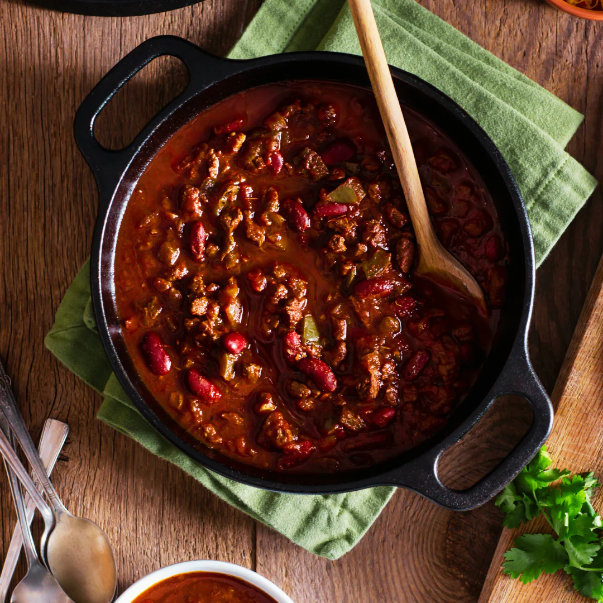

Chilli Con Carne

Description
Quite possibly my favourite meal to make and eat. Growing up, my mother would make thi s on occasion,
never often enough for me. I would find myself craving it again far too soon after I have finished my plate.
As I grew up and moved out, I have started to make this weekly, not just for the ease or taste, but the nutritional
macros are off the charts. Low cal and high in protein, on my strictest diets and my heaviest bulks, I am always
satisfied after pulling this out of the fridge.
Ingredients
- 5% Mince Beef, 500g
- 1 Can Tomatoes, 400g
- 1 Can Black Beans, 420g
- 1 Can Kidney Beans, 420g
- 1 Pack of Aldi Chilli Con Carne Seasoning
- Salt and Chilli Flakes to taste
Steps
- Drain and rinse the black beans and kidney beans, I prefer to get this out of the way first.
- Heat a large pan on a high heat, you want this as hot as possible.
- Add the mince beef, break apart and cook until browned.
- Season with salt and chilli flakes while cooking and mix through
- Do not drain any excess fat or juices.
- Add the seasoning packet in and mix over all meat surfaces.
- Turn down the heat to low-medium then add the black & kidney beans.
- Season with salt and chilli flakes if desired.
- After a minute or two, kill the heat and add the tomatoes.
- Stir to incorporate and allow tomatoes to get to heat.
- Serve with any accompaniments you wish or let cool and store in the fridge.
Home